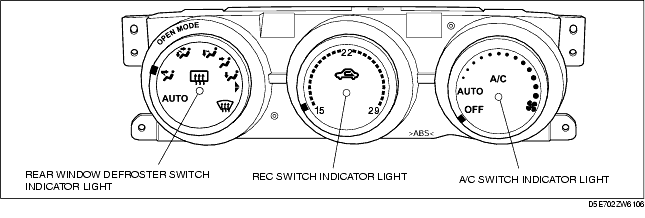

Troubleshooting ➭ HEATER, VENTILATION & AIR CONDITIONING ➭ DTC INSPECTION
DTC INSPECTION
id070200800200
{: #wp1059798}
-
Turn the ignition switch to the ON position, then press and hold the A/C switch for 5 s or more within 10 s.
-
Turn the fan switch to the OFF position.
-
Verify that all the indicator lights of the climate control unit illuminate.{: #wp1059817}

- Press the recirculate switch or turn the ignition switch off to finish.
Malfunction detection function
- Shine a 60 W incandescent light from a distance of approx. 100 mm vertically to the solar radiation sensor.
*Note*{: #wp1059893}
• If incandescent light is not shone on the solar radiation sensor, the climate control unit determines that there is a malfunction
-
Turn the ignition switch to the ON position, then press and hold the A/C switch for 5 s or more within 10 s.
-
Turn the fan switch to the AUTO position.
-
Turn and adjust the mode dial to the inspection item.
• If the system is normal, the A/C switch indicator light illuminates.
|
MODE DIAL POSITION {: #wp1060089} |
A/C SWITCH INDICATOR {: #wp1060091} |
||
|---|---|---|---|
|
OK {: #wp1060174} |
NG {: #wp1060177} |
||
|
ALL SENSOR {: #wp1059981} |
AUTO {: #wp1059983} |
ON {: #wp1060039} |
OFF {: #wp1060042} |
|
AMBIENT TEMPERATURE SENSOR {: #wp1060116} |
OPEN/VENT {: #wp1060119} |
ON {: #wp1060122} |
OFF {: #wp1060125} |
|
CABIN TEMPERATURE SENSOR {: #wp1060129} |
BI-LEVEL {: #wp1060132} |
ON {: #wp1060135} |
OFF {: #wp1060138} |
|
SOLAR RADIATION SENSOR {: #wp1060142} |
OPEN/HEAT {: #wp1060145} |
ON {: #wp1060148} |
OFF {: #wp1060151} |
|
EVAPORATOR TEMPERATURE SENSOR {: #wp1060155} |
VENT {: #wp1060158} |
ON {: #wp1060161} |
OFF {: #wp1060164} |
|
AIR MIX ACTUATOR {: #wp1060313} |
HEAT {: #wp1060316} |
ON {: #wp1060319} |
OFF {: #wp1060322} |
-
- Press the recirculate switch or turn the ignition switch off to finish.
Door position check function
-
Turn the ignition switch to the ON position, then press and hold the A/C switch for 5 s or more within 10 s.
-
Turn the fan switch to the LO position.
-
Verify that the indicator light of the climate control unit illuminates.
|
INDICATOR PARTS {: #wp1060482} |
|
|---|---|
|
ALL OK {: #wp1060422} |
A/C SWITCH {: #wp1060424} |
|
AIRFLOW MODE ACTUATOR {: #wp1060497} |
REC SWITCH {: #wp1060500} |
|
AIR INTAKE ACTUATOR {: #wp1060504} |
REAR WINDOW DEFROSTER SWITCH {: #wp1060507} |
- Press the recirculate switch or turn the ignition switch off to finish.
Operation check function
-
Turn the ignition switch to the ON position, then press and hold the A/C switch for 5 s or more within 10 s.
-
Turn the fan switch to a position other than OFF, AUTO, or LO positions.
-
Verify the operation of each output related part by switching the mode dial positions while referring to the operation check table.
• If there is any malfunction, inspect the malfunctioning system.
|
AUTO {: #wp1061183} |
OPEN VENT {: #wp1061186} |
BI-LEVEL {: #wp1061189} |
OPEN/HEAT {: #wp1061192} |
VENT {: #wp1061195} |
HEAT {: #wp1061198} |
HEAT/DEF {: #wp1061201} |
DEFROSTER {: #wp1061204} |
|
|
MODE DOOR {: #wp1060643} |
OPEN {: #wp1060645} VENT {: #wp1061274} |
OPEN {: #wp1060701} VENT {: #wp1061285} |
BI-LEVEL {: #wp1060704} |
OPEN {: #wp1060707} VENT {: #wp1061302} |
VENT {: #wp1060710} |
HEAT {: #wp1060713} |
HEAT/DEF {: #wp1060716} |
DEFROSTER {: #wp1060719} |
|
AIR INTAKE DOOR {: #wp1060928} |
REC {: #wp1060931} |
REC {: #wp1060934} |
FRESH {: #wp1060937} |
REC {: #wp1060940} |
REC {: #wp1060943} |
FRESH {: #wp1060946} |
FRESH {: #wp1060949} |
FRESH {: #wp1060952} |
|
AIR MIX DOOR {: #wp1060956} |
MAX COLD {: #wp1060959} |
MAX COLD {: #wp1060962} |
MAX HOT {: #wp1060965} |
MAX COLD {: #wp1060968} |
MAX COLD {: #wp1060971} |
MAX HOT {: #wp1060974} |
MAX HOT {: #wp1060977} |
MAX HOT {: #wp1060980} |
|
BLOWER MORTER {: #wp1060984} |
4.5±2 V {: #wp1060987} |
4.5±2 V {: #wp1060990} |
10.5± 2 V {: #wp1060993} |
4.5± 2 V {: #wp1060996} |
10.5± 2 V {: #wp1060999} |
8.5± 2 V {: #wp1061002} |
8.5±2 V {: #wp1061005} |
VB {: #wp1061008} |
|
A/C COMPRESSOR {: #wp1061012} |
OFF {: #wp1061015} |
ON {: #wp1061018} |
OFF {: #wp1061021} |
ON {: #wp1061024} |
OFF {: #wp1061027} |
ON {: #wp1061030} |
ON {: #wp1061033} |
ON {: #wp1061036} |
- Press the recirculate switch or turn the ignition switch off to finish.